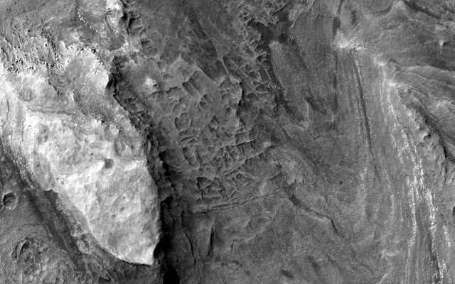
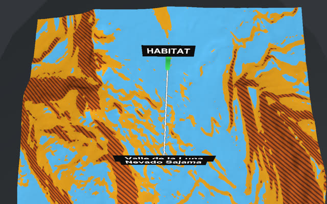
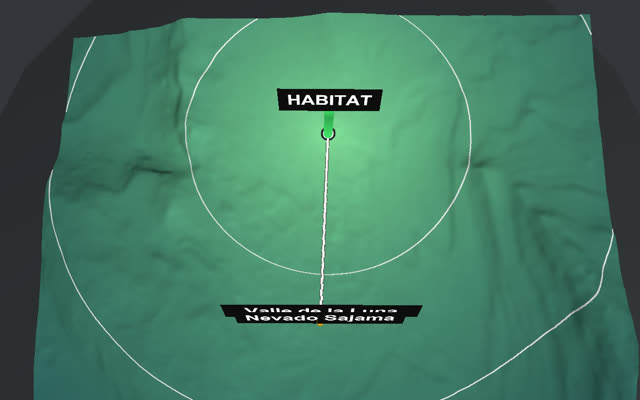
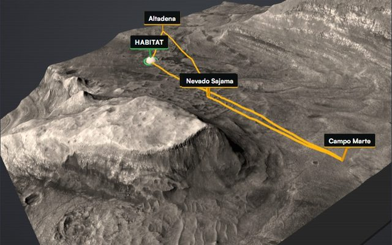
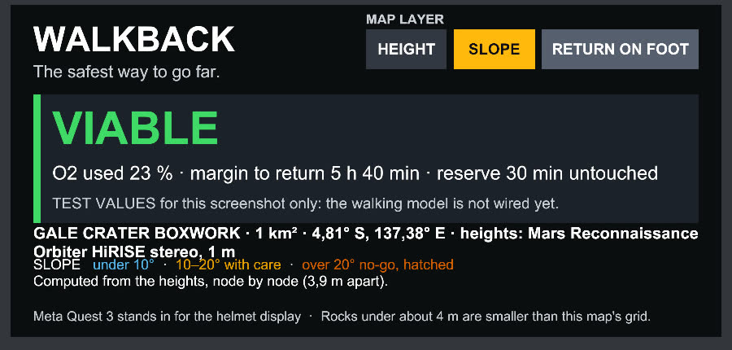
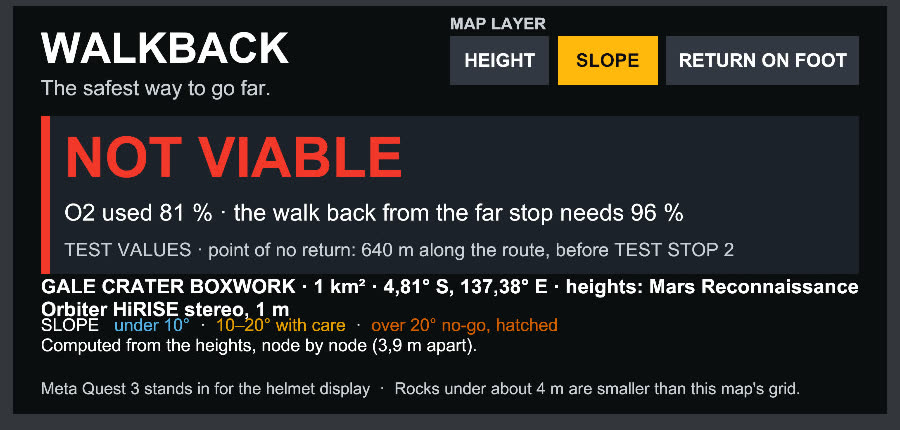
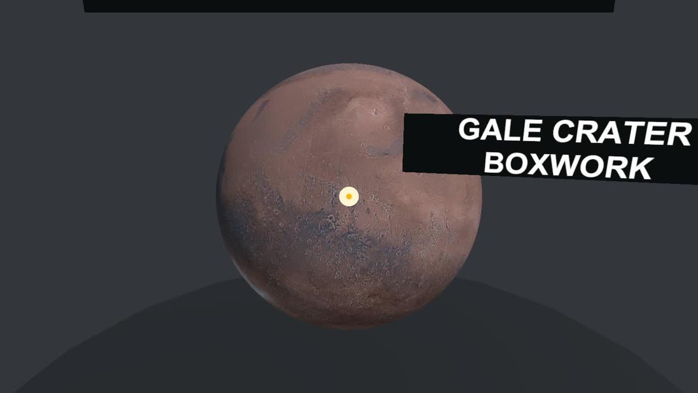
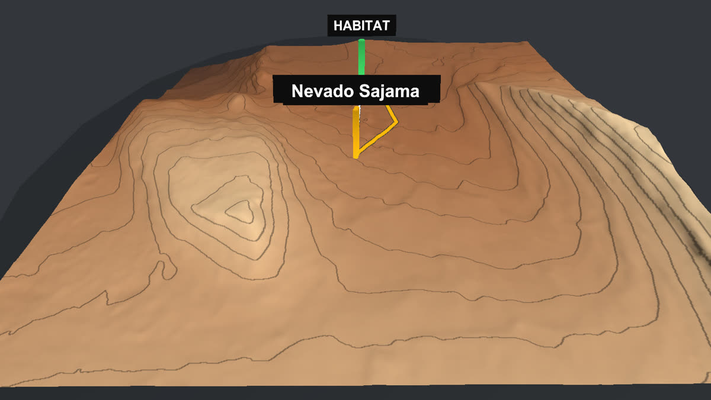
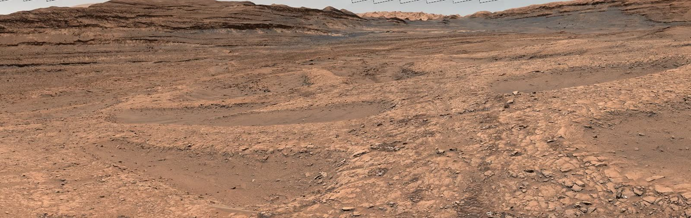

3–22 min
No GPS, no rescue
Mars has no navigation satellites, and a message to Earth takes 3 to 22 minutes to arrive. The crew has to know on its own whether it can still get home.
NASA Space Apps 2026 · Team MARSXR
Checking return path…
Walkback tells an astronaut on Mars, at every step, whether they can still make it back to the habitat.
The problem
Three reasons a walk out from the habitat is never a straight line.
3–22 min
Mars has no navigation satellites, and a message to Earth takes 3 to 22 minutes to arrive. The crew has to know on its own whether it can still get home.
19% over 20°
500 m on a flat map can be a dead end. Walkback treats slopes over 20° as no-go, and in our square kilometre of Gale, 19% of the ground is that steep.
1 tank
Apollo rover traverses were planned around a walkback limit: never farther from the lunar module than the crew's backpack oxygen and water could carry them back on foot if the rover failed. Walkback recalculates that limit at every step: the slope of the ground sets the walking pace, and the oxygen is counted per minute (ESTIMATE).
Interactive map
1 km² of Gale Crater, Mars. Tap anywhere on the ground.
SLOPE under 10° · 10–20° with care · over 20° no-go, hatched
Back to the habitat
What if the tank ran low?
As planned: the panel shows the whole walk with a full tank.
The mission plan
The app plans habitat → four stops → habitat over the real relief and checks the oxygen at every stop.
Estimate · plan B over the relief, not the team's walking model yet
Curiosity drilled here · Jun 2025 · 200 m from the habitat
Curiosity's 43rd drill hole, in the boxwork bedrock: its powder went to the CheMin and SAM labs.
Curiosity drilled here · Oct 2025
Curiosity's 44th drill hole, in the Monte Grande hollow: is the hollow rock different from the ridges?
Curiosity drilled here · Nov 2025 · 360° photo
Drilled on a boxwork ridge top, 10 m from Valle de la Luna: ridge rock versus hollow rock.
Curiosity drilled here · May 2026 · 716 m away, 77 m higher
Drill hole in the layered sulfate unit just above the boxwork; ChemCam and APXS measured it first.
What if the tank ran low? With 15% of the tank the verdict turns NOT VIABLE; with 8%, the app paints red 57.5% of the ground that still has a way back on foot.
Stops, science and dates: NASA's Curiosity blog, at the rover's own positions. The map above draws this same plan on the same relief the headset app uses.
How it works
Orbital maps of Gale Crater become a 3D surface. Slopes over 20° are marked as no-go.
For every spot, it knows the minutes and oxygen needed to walk back to the habitat.
It flags the point of no return before you reach it, so you can go far without going too far.
Meta Quest 3 stands in for the helmet display.
Science & model
Open NASA data in, one decision out. The relief is stored in the headset and everything is worked out there, so it needs no signal.

01HiRISE heights at 1 m and a 25 cm photo of 1 km² of Gale crater, plus Curiosity's real drive positions.
MRO HiRISE · USGS · NASA/JPL

02Slope from the heights, cell by cell. Over 20° is no-go: the hatched zones on the map's SLOPE layer. Checked against Curiosity's own tilt sensor: 2.0° on average over 85 positions (r = 0.77, largest 21°).
Over 20° · no-go

03For each of 66,049 cells, 3.9 m apart: the minutes and the litres of oxygen it takes to walk back to the habitat.
Computed in the headset · offline

04The headset reads the cell under the astronaut's feet and warns before the point of no return, with no network.
Viable · Point of no return
Pictures 03 and 04 are from an earlier build (14 Nov): straight-line test rings and a one-stop test route. The interactive map above shows the current return layer and the four-stop route.
In the headset
Screens from the Meta Quest 3 app: the same verdict, in front of the astronaut.





App screens from an earlier build (14 Nov), captured by its automatic test in the Unity editor; the numbers on them are test values, as the screens themselves say. The panorama is NASA's real Mastcam photo.
Phase 1 · Plan
The square kilometre of Gale sits on a table in the room. Four layers (photo, height, slope, return), the route through the four stops, the verdict with its oxygen, time and height charts, and the WHAT IF.
Phase 2 · Explore
START MISSION puts the astronaut on Mars at 1:1: the route on the ground, a pillar at each stop and a visor with compass, an arrow to the next stop, the oxygen bar with its reserve, and the minutes back in green, amber or red.
The app's own automatic test: 424 of 424 checks passing, without the headset.
Open this page in the headset's browser and press Enter VR to stand at the habitat, in Gale crater, at real scale.
FAQ
Mars Trek shows whole regions. Walkback zooms down to the scale of a walk, adds the route and gives a recommendation.
Because you understand relief by moving through it, and the crew can rehearse the walk before heading out. The same data can later go to a tablet or to the helmet display.
No. Rovers find where they are with cameras and motion sensors, corrected with HiRISE photos taken from orbit. The Quest headset tracks itself with its own cameras and motion sensors.
The calculation runs in the headset, with no signal: the minutes back to the habitat come from a return map the headset works out from the relief stored in the app. The weather is Curiosity's latest report, stored with its date; only the week's space-weather line can be read live from NASA DONKI when the headset has internet.
No. Every mission number is an estimate and says ESTIMATE on screen: the app uses a stand-in plan over the relief until the team's walking and oxygen model is in. The terrain itself is checked: its slopes differ from Curiosity's own tilt sensor by 2.0° on average over 85 rover positions (r = 0.77, largest difference 21°).